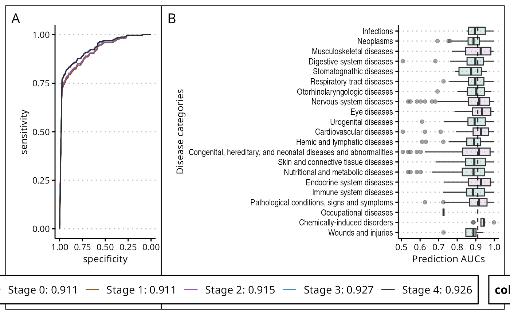

Setup
The labyrinth framework was initially developed and
tested on Fedora 39 with R 4.3, this vignette aims to demonstrate its
ease of use on the Windows Subsystem for Linux (WSL) environment.
Specifically, we will be presenting the results using Fedora
Remix for WSL.
To get started, you will need to prepare the following dependencies.
Fedora or Red Hat Enterprise Linux with or without WSL.
R 4.3.
Required libraries.
## -- Attaching core tidyverse packages ------------------------ tidyverse 2.0.0 --
## v dplyr 1.1.4 v readr 2.1.5
## v forcats 1.0.0 v stringr 1.5.1
## v ggplot2 3.5.1 v tibble 3.2.1
## v lubridate 1.9.3 v tidyr 1.3.1
## v purrr 1.0.2
## -- Conflicts ------------------------------------------ tidyverse_conflicts() --
## x dplyr::filter() masks stats::filter()
## x dplyr::lag() masks stats::lag()
## i Use the conflicted package (<http://conflicted.r-lib.org/>) to force all conflicts to become errorsWith these installed and loaded, you will have a consistent
environment for running the labyrinth.
Data preparation
drug_disease_weight <- load_data('drug_disease_weight')Load the pre-trained model.
## [1] 7686 7686The labyrinth model is trained by integrating knowledge from two major sources: text-based information from medical corpora and biological knowledge from functional interaction networks.
For the text-based component, labyrinth: 1. Extracts drug information (nomenclature, targets, and indications) from databases like DrugBank, CTD, and ChEMBL. 2. Obtains clinical trial data from the Cochrane Library. 3. Mines co-occurrence patterns in published literature from the Web of Science corpus. 4. Preprocesses the text data from over 10 million publications, including stop word removal and term vectorization using Skip-gram models. 5. Quantifies structured drug-disease relationships based on clinical trial phases, citation analysis, and network proximity between gene sets.
For the biological component, labyrinth evaluates the network proximity between drug target modules and disease gene modules within a functional interactome network.
The text-based and biological knowledge matrices are then integrated through probabilistic computations, simulating the process of storing relevant knowledge in long-term memory for decision-making.
Reproducibility example
Labyrinth learns mechanisms that mediate specific drug response
To validate our approach, we initially evaluated the predictive accuracy across various diseases. This involved assessing the Spearman correlations between the priority scores assigned by labyrinth and the established weights in clinical trials, alongside proximity metrics for each drug-disease pair. Labyrinth exhibited moderate to high correlations, with coefficients of 0.60 for clinical trials and 0.80 for proximity, respectively.
roc0 <- mutate(drug_disease_weight, weight = if_else(weight > 1, 1, 0)) %>%
pROC::roc(weight, score)## Setting levels: control = 0, case = 1## Setting direction: controls < cases
roc1 <- mutate(drug_disease_weight, weight = if_else(weight > 1.8, 1, 0)) %>%
pROC::roc(weight, score)## Setting levels: control = 0, case = 1
## Setting direction: controls < cases
roc2 <- mutate(drug_disease_weight, weight = if_else(weight > 2, 1, 0)) %>%
pROC::roc(weight, score)## Setting levels: control = 0, case = 1
## Setting direction: controls < cases
roc3 <- mutate(drug_disease_weight, weight = if_else(weight > 3, 1, 0)) %>%
pROC::roc(weight, score)## Setting levels: control = 0, case = 1
## Setting direction: controls < cases
roc4 <- mutate(drug_disease_weight, weight = if_else(weight > 4, 1, 0)) %>%
pROC::roc(weight, score)## Setting levels: control = 0, case = 1
## Setting direction: controls < cases
p1 <- pROC::ggroc(list(
roc0, roc1, roc2, roc3, roc4
)) +
scale_color_manual('Drug trials', labels = c(
paste('Stage 0:', round(roc0$auc, 3)),
paste('Stage 1:', round(roc1$auc, 3)),
paste('Stage 2:', round(roc2$auc, 3)),
paste('Stage 3:', round(roc3$auc, 3)),
paste('Stage 4:', round(roc4$auc, 3))
), values = c('#cf4e9c', '#835921', '#8d59a3', '#368db9', '#302c2d')) +
ggthemes::theme_clean() +
theme(legend.position = 'left')
rm(list = c('roc0', 'roc1', 'roc2', 'roc3', 'roc4'))Subsequently, we extended our analysis to encompass all human diseases, aiming to assess the predictive performance across five clinical trial phases, including pre-clinical, phases 1 to 3, and approved treatments. We evaluated the prediction performance by Receiver Operating Characteristic Area Under the Curve (ROC-AUC). As illustrated in Figure 3A, the ROC-AUC values for all stages surpassed 0.90, indicating a predictive success rate of over 90% in distinguishing between drugs classified for clinical trial or non-clinical trial.
# We perform ROC analysis in every single disease
disease_pred <- split(select(drug_disease_weight, weight, score), drug_disease_weight$mesh_id) %>%
map(~ arrange(.x, desc(weight)))
disease_pred <- pbapply::pblapply(names(disease_pred), function(n) {
x <- disease_pred[[n]]
if (nth(x$weight, 2) > 1.5) {
ci <- suppressMessages({
x %>%
mutate(weight = if_else(weight > 1.5, 1, 0)) %>%
pROC::roc(weight, score, ci = TRUE) %>%
{as.numeric(.$ci)}
})
ret <- data.frame(mesh_id = n, ci_lower = ci[1], ci_upper = ci[3], auc = ci[2])
} else {
ret <- data.frame()
}
return(ret)
}) %>% bind_rows()
# Next, we divide the ROC and average them based on MeSH structures
mesh_ids <- unique(drug_disease_weight$mesh_id)
data("mesh_annot")
disease_cluster <- distinct(mesh_annot) %>%
mutate(parent_group = str_to_sentence(group_name)) %>%
select(!group_name) %>%
arrange(group_id) %>%
left_join(disease_pred, by = 'mesh_id') %>%
drop_na()
disease_color <- group_by(disease_cluster, group_id) %>%
summarize(color = median(auc) > 0.911)
p2 <- mutate(disease_cluster, parent_group = fct_reorder(parent_group, -group_id)) %>%
left_join(disease_color, by = 'group_id') %>%
ggplot(aes(x = parent_group, y = auc, fill = color)) +
geom_boxplot(alpha = 0.4) +
geom_hline(aes(yintercept = 0.911), linetype = 'dashed') +
labs(x = 'Disease categories',
y = 'Prediction AUCs') +
coord_flip() +
scale_fill_manual(values = c('#9fcdc9', '#d4bfe0')) +
ggthemes::theme_clean() +
theme(legend.position = 'none',
axis.text.y = element_text('Arial Narrow'))Notably, labyrinth exhibited high predictive accuracy in determining drug usability for Stage 3 across all disease categories except for occupational and stomatognathic diseases (Figure 3B). Also, cardiovascular, endocrine system diseases, and neoplasms garnered the most significant benefits from labyrinth. Detailed ROC-AUC predictions for all diseases are provided in Additional File 1.
design <- "
11#222
222222
222222
"
p1 + p2 + plot_layout(guides = 'collect') +
plot_annotation(tag_levels = 'A') &
theme(legend.position = 'bottom') ### Reproducibility statement
All other results in the article can be reproduced using standard R code.
Session info
devtools::session_info()## - Session info ---------------------------------------------------------------
## setting value
## version R version 4.4.1 (2024-06-14)
## os Fedora Linux 41 (Container Image)
## system x86_64, linux-gnu
## ui X11
## language en
## collate C
## ctype C
## tz Etc/UTC
## date 2024-11-01
## pandoc 3.1.11.1 @ /usr/bin/ (via rmarkdown)
##
## - Packages -------------------------------------------------------------------
## package * version date (UTC) lib source
## backports 1.5.0 2024-05-23 [2] CRAN (R 4.4.0)
## bslib 0.8.0 2024-07-29 [2] CRAN (R 4.4.1)
## cachem 1.1.0 2024-05-16 [2] CRAN (R 4.4.0)
## checkmate 2.3.2 2024-07-29 [2] CRAN (R 4.4.1)
## cli 3.6.3 2024-06-21 [2] CRAN (R 4.4.1)
## codetools 0.2-20 2024-03-31 [2] CRAN (R 4.4.0)
## colorspace 2.1-1 2024-07-26 [2] CRAN (R 4.4.1)
## desc 1.4.3 2023-12-10 [2] CRAN (R 4.4.0)
## devtools 2.4.5 2022-10-11 [2] CRAN (R 4.4.0)
## diffusr 0.2.3 2024-11-01 [2] Bioconductor
## digest 0.6.37 2024-08-19 [2] CRAN (R 4.4.1)
## dplyr * 1.1.4 2023-11-17 [2] CRAN (R 4.4.0)
## ellipsis 0.3.2 2021-04-29 [2] CRAN (R 4.4.0)
## evaluate 1.0.1 2024-10-10 [2] CRAN (R 4.4.1)
## fansi 1.0.6 2023-12-08 [2] CRAN (R 4.4.0)
## farver 2.1.2 2024-05-13 [2] CRAN (R 4.4.0)
## fastmap 1.2.0 2024-05-15 [2] CRAN (R 4.4.0)
## fastmatch 1.1-4 2023-08-18 [2] CRAN (R 4.4.0)
## forcats * 1.0.0 2023-01-29 [2] CRAN (R 4.4.0)
## fs 1.6.5 2024-10-30 [2] CRAN (R 4.4.1)
## generics 0.1.3 2022-07-05 [2] CRAN (R 4.4.0)
## ggplot2 * 3.5.1 2024-04-23 [2] CRAN (R 4.4.0)
## ggthemes 5.1.0 2024-02-10 [2] CRAN (R 4.4.0)
## glue 1.8.0 2024-09-30 [2] CRAN (R 4.4.1)
## gtable 0.3.6 2024-10-25 [2] CRAN (R 4.4.1)
## highr 0.11 2024-05-26 [2] CRAN (R 4.4.0)
## hms 1.1.3 2023-03-21 [2] CRAN (R 4.4.0)
## htmltools 0.5.8.1 2024-04-04 [2] CRAN (R 4.4.0)
## htmlwidgets 1.6.4 2023-12-06 [2] CRAN (R 4.4.0)
## httpuv 1.6.15 2024-03-26 [2] CRAN (R 4.4.0)
## igraph 2.1.1 2024-10-19 [2] CRAN (R 4.4.1)
## jquerylib 0.1.4 2021-04-26 [2] CRAN (R 4.4.0)
## jsonlite 1.8.9 2024-09-20 [2] CRAN (R 4.4.1)
## knitr 1.48 2024-07-07 [2] CRAN (R 4.4.1)
## labeling 0.4.3 2023-08-29 [2] CRAN (R 4.4.0)
## labyrinth * 0.3.0 2024-11-01 [1] local
## later 1.3.2 2023-12-06 [2] CRAN (R 4.4.0)
## lattice 0.22-6 2024-03-20 [2] CRAN (R 4.4.0)
## lifecycle 1.0.4 2023-11-07 [2] CRAN (R 4.4.0)
## lubridate * 1.9.3 2023-09-27 [2] CRAN (R 4.4.0)
## magrittr 2.0.3 2022-03-30 [2] CRAN (R 4.4.0)
## Matrix 1.7-1 2024-10-18 [2] CRAN (R 4.4.1)
## MatrixGenerics 1.18.0 2024-10-29 [2] Bioconductor 3.20 (R 4.4.1)
## matrixStats 1.4.1 2024-09-08 [2] CRAN (R 4.4.1)
## memoise 2.0.1 2021-11-26 [2] CRAN (R 4.4.0)
## memuse 4.2-3 2023-01-24 [2] CRAN (R 4.4.0)
## mime 0.12 2021-09-28 [2] CRAN (R 4.4.0)
## miniUI 0.1.1.1 2018-05-18 [2] CRAN (R 4.4.0)
## munsell 0.5.1 2024-04-01 [2] CRAN (R 4.4.0)
## patchwork * 1.3.0 2024-09-16 [2] CRAN (R 4.4.1)
## pbapply 1.7-2 2023-06-27 [2] CRAN (R 4.4.0)
## pillar 1.9.0 2023-03-22 [2] CRAN (R 4.4.0)
## pkgbuild 1.4.5 2024-10-28 [2] CRAN (R 4.4.1)
## pkgconfig 2.0.3 2019-09-22 [2] CRAN (R 4.4.0)
## pkgdown 2.1.1 2024-09-17 [2] CRAN (R 4.4.1)
## pkgload 1.4.0 2024-06-28 [2] CRAN (R 4.4.1)
## plyr 1.8.9 2023-10-02 [2] CRAN (R 4.4.0)
## pROC 1.18.5 2023-11-01 [2] CRAN (R 4.4.0)
## profvis 0.4.0 2024-09-20 [2] CRAN (R 4.4.1)
## promises 1.3.0 2024-04-05 [2] CRAN (R 4.4.0)
## pryr 0.1.6 2023-01-17 [2] CRAN (R 4.4.0)
## purrr * 1.0.2 2023-08-10 [2] CRAN (R 4.4.0)
## R6 2.5.1 2021-08-19 [2] CRAN (R 4.4.0)
## ragg 1.3.3 2024-09-11 [2] CRAN (R 4.4.1)
## Rcpp 1.0.13 2024-07-17 [2] CRAN (R 4.4.1)
## RcppEigen 0.3.4.0.2 2024-08-24 [2] CRAN (R 4.4.1)
## RcppProgress 0.4.2 2020-02-06 [2] CRAN (R 4.4.0)
## readr * 2.1.5 2024-01-10 [2] CRAN (R 4.4.0)
## remotes 2.5.0 2024-03-17 [2] CRAN (R 4.4.0)
## rlang 1.1.4 2024-06-04 [2] CRAN (R 4.4.0)
## rmarkdown 2.28 2024-08-17 [2] CRAN (R 4.4.1)
## rpca 0.2.3 2015-07-31 [2] CRAN (R 4.4.1)
## sass 0.4.9 2024-03-15 [2] CRAN (R 4.4.0)
## scales 1.3.0 2023-11-28 [2] CRAN (R 4.4.0)
## sessioninfo 1.2.2 2021-12-06 [2] CRAN (R 4.4.0)
## shiny 1.9.1 2024-08-01 [2] CRAN (R 4.4.1)
## sparseMatrixStats 1.18.0 2024-10-29 [2] Bioconductor 3.20 (R 4.4.1)
## stringi 1.8.4 2024-05-06 [2] CRAN (R 4.4.0)
## stringr * 1.5.1 2023-11-14 [2] CRAN (R 4.4.0)
## systemfonts 1.1.0 2024-05-15 [2] CRAN (R 4.4.0)
## textshaping 0.4.0 2024-05-24 [2] CRAN (R 4.4.0)
## tibble * 3.2.1 2023-03-20 [2] CRAN (R 4.4.0)
## tidyr * 1.3.1 2024-01-24 [2] CRAN (R 4.4.0)
## tidyselect 1.2.1 2024-03-11 [2] CRAN (R 4.4.0)
## tidyverse * 2.0.0 2023-02-22 [2] CRAN (R 4.4.0)
## timechange 0.3.0 2024-01-18 [2] CRAN (R 4.4.1)
## tzdb 0.4.0 2023-05-12 [2] CRAN (R 4.4.0)
## urlchecker 1.0.1 2021-11-30 [2] CRAN (R 4.4.0)
## usethis 3.0.0 2024-07-29 [2] CRAN (R 4.4.1)
## utf8 1.2.4 2023-10-22 [2] CRAN (R 4.4.0)
## vctrs 0.6.5 2023-12-01 [2] CRAN (R 4.4.0)
## withr 3.0.2 2024-10-28 [2] CRAN (R 4.4.1)
## xfun 0.49 2024-10-31 [2] CRAN (R 4.4.1)
## xtable 1.8-4 2019-04-21 [2] CRAN (R 4.4.0)
## yaml 2.3.10 2024-07-26 [2] CRAN (R 4.4.1)
##
## [1] /tmp/Rtmp7UE7DX/temp_libpath89a12be8968
## [2] /usr/local/lib/R/library
## [3] /usr/lib64/R/library
## [4] /usr/share/R/library
##
## ------------------------------------------------------------------------------